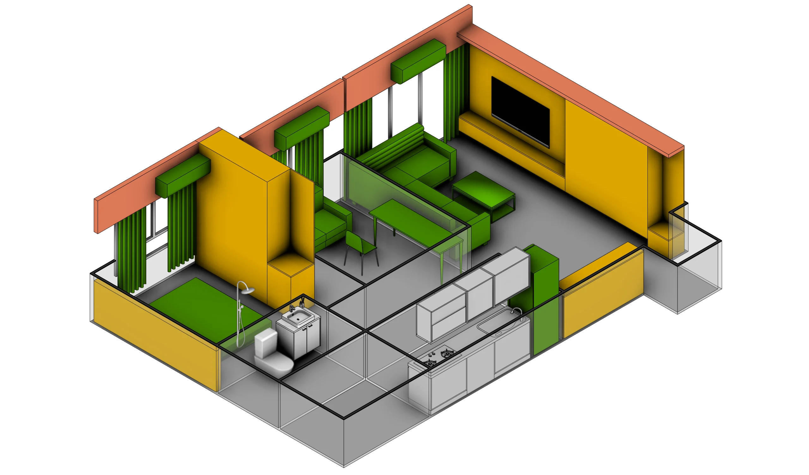
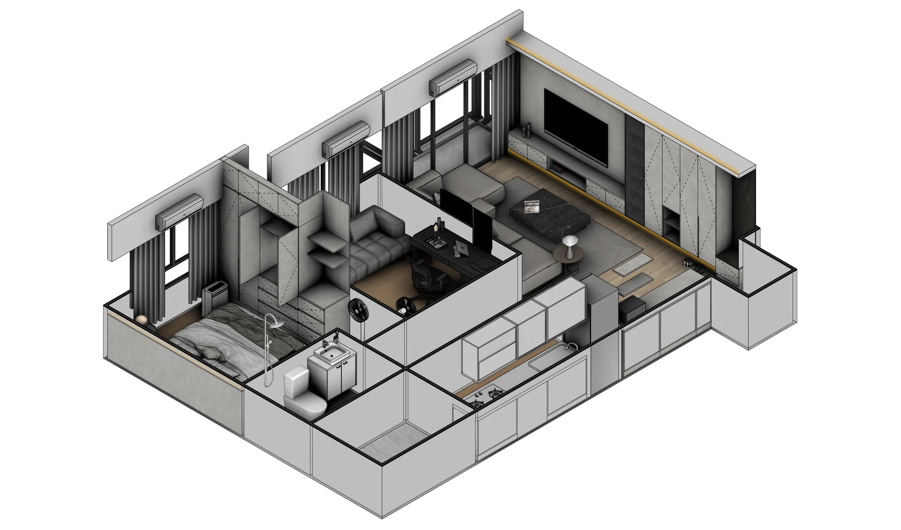
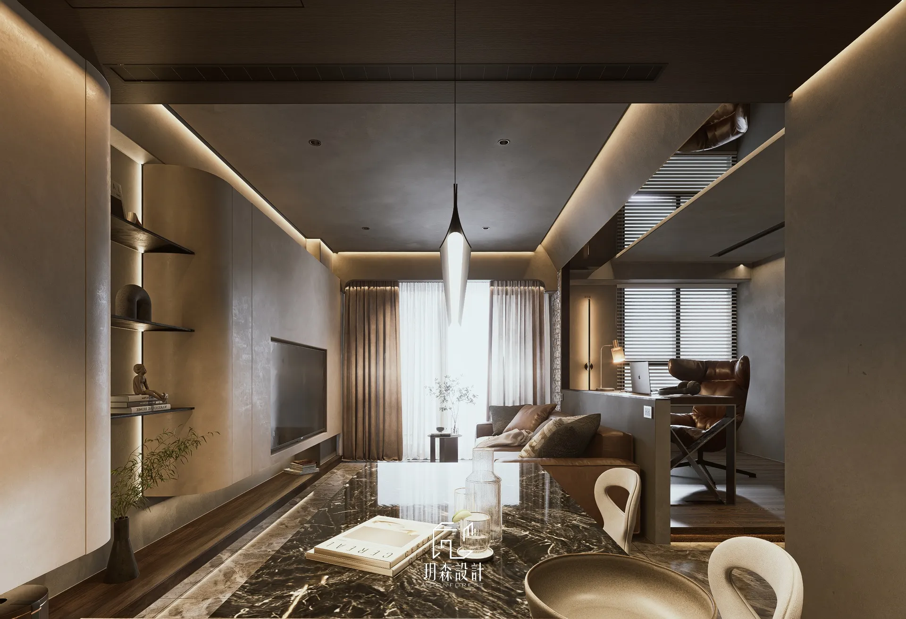

新成屋設計
從格局、動線、收納、照明到材料搭配，建立符合家庭生活方式的完整空間。
新成屋裝潢怎麼開始？
除了完工後的樣子，我們也記錄每個案子的現場條件、設計判斷與材料細節。以下是幾個精選住宅案例。
先了解你怎麼生活，再把美感、機能、預算和施工條件放在同一張桌上討論，讓設計與工程從一開始就在同一個方向上。
從格局、動線、收納、照明到材料搭配，建立符合家庭生活方式的完整空間。
新成屋裝潢怎麼開始？依屋況檢視拆除、水電、泥作、木作與設備需求，美感之外，也處理老屋真正的限制。
老屋翻新先做什麼？由同一設計端統整圖面、材料、預算與施工介面，少一點訊息落差，少一點現場猜測。
設計師與統包怎麼選？設計初期就考慮尺寸、收口、材料交接與施工順序，工程期間持續核對現場，降低完工落差。
耐用、安全和每天會使用的地方不隨意犧牲；效益有限的升級，也不為提高總價而推薦。
以長期合作、熟悉品質要求的團隊為主。先確認檔期，再提出負責任的工程安排。
裝修不是小額消費。初談先釐清需求、預算與施工條件，讓彼此判斷是否適合合作。
MoonBlock 是玥森用來整理空間需求的圖塊系統。
初期先把收納、家具、設備與生活區域化成容易辨識的單元，讓屋主快速看見格局中的取捨；確認合作後，再逐步加入尺寸、材質、燈光、櫃體與施工細節。
它不是用幾個方塊取代設計，而是讓複雜的討論先有共同語言，降低「說的是同一件事，想像卻不一樣」的落差。


更早看見取捨收納增加多少、走道剩下多少，不只停留在口頭描述。
讓討論有共同畫面家庭成員與設計端能針對同一個空間版本溝通。
從概念走向可執行方向確認後再深化細節，讓每一步都有前一階段的依據。

玥森的設計思維，來自不同設計領域的累積。
在投入住宅空間設計之前，我們曾參與品牌與視覺設計，於獲得國內外設計獎項的專業團隊中，累積對比例、色彩、材質與整體體驗的理解。這些經驗，也成為今日空間設計的重要基礎。
我們相信，品牌與住宅雖然呈現方式不同，追求的卻是同一件事——讓人感受到秩序、美感與舒適。
因此，玥森不以風格作為起點，而是先理解居住者的生活方式，再透過光線、材質、動線與收納，打造真正適合長久居住的空間。
因為好的設計，不只是看起來漂亮，而是在多年之後，依然自然、耐看，並陪伴生活持續發生。
將工程管理的專業帶入材料規格、施工順序與現場銜接，使設計判斷能夠被穩定落實。
淬鍊空間本質，重塑生活美學。
裝修過程資訊很多，我們把工程階段、待確認事項、選材結果、付款進度與現場照片整理在專屬案件空間。屋主不必翻找零散訊息，也能隨時掌握家的完成進度。
目前進行至｜木作工程
保護工程完成現場照片已更新
木作工程進行中今日進度已記錄
分享案場、家庭成員、期待與預算方向，確認彼此是否合適。
確認屋況與服務範圍，進入格局、收納、風格及圖面發展。
逐項討論材料規格與取捨，把影響使用及施工的地方說清楚。
由熟悉的合作工班執行，設計端持續核對圖面、現場與工種銜接。
逐項確認完成狀況，讓新家從「看起來好」走到「真正住得好」。
每個案件的屋況、範圍及工期不同，實際流程與交付內容以雙方確認及正式合約為準。
裝修指南依「裝修起步、系統櫃、木作工程」分類。先選主題，再找真正需要閱讀的文章。
進入台中裝修指南 →新成屋可在預計交屋前先開始了解與接洽；老屋則建議在預計動工前保留更充裕的屋況評估、設計與報價時間。檔期會依案件不同，越早提供時程越容易一起規劃。
有平面圖、現場照片、案場地區、坪數、家庭成員、預計入住時間和預算方向就很好。資料還不齊也沒關係，先說明目前進度即可。
相同品名背後，仍可能有用量、規格、五金配置、施工範圍與責任歸屬的差異。我們鼓勵比較，但建議在相同服務範圍與材料規格下比較。
以台中及鄰近縣市的住宅為主，聚焦新成屋、老屋翻新與整體設計工程。若是局部或單一空間，也可以先提供範圍，由我們一起確認是否適合協助。
不用。初步溝通的目的，是先釐清需求、預算、時程與合作方式。裝修值得好好比較，我們不會要求你在初談當下立即簽約。
把案場地區、房屋類型、坪數、預計入住時間，以及最想解決的三件事傳給我們。先聊清楚，再決定下一步。
初步整理資料大約 3 分鐘，不需要當下做決定。